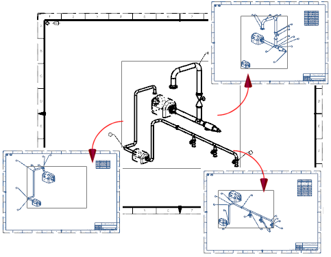

Estimated time to complete: 8–15 minutes
In this activity, you will generate a drawing booklet comprised of three primary content objects, along with secondary and excluded objects. You will also use the Drafting Automation preferences to configure the display properties of secondary content in the booklet.

|
Note |
To complete this activity in its entirety, the following setup is required:
You are not required to use a template to create a drawing booklet. If Show Template is not selected, you can still generate a drawing booklet with primary, secondary, and excluded content, but you will not see the Introductory Template step in the Task Navigator and will not get an introductory drawing sheet. |
Open the Create a drawing booklet activity.